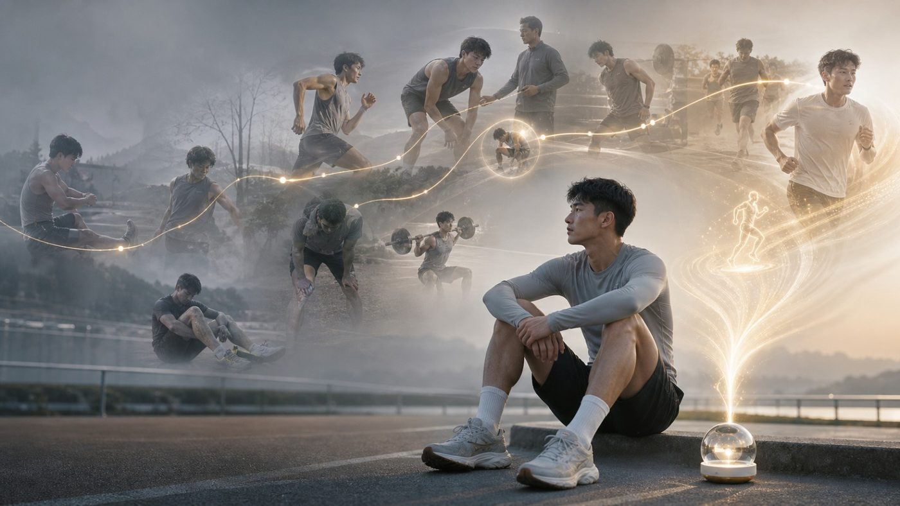

Wearable
Worn on a strap or as a pin, capturing what you see.
 Earthory
EarthoryA 360° sensing device the size of a crystal orb. It captures steadily, connects securely, and always shows you whether it is working. The hardware steps back so the memory can come forward.
A single magnetic interface plus interchangeable shells let Earthory One move from your body to the home, the desk, the car and the bike. Hardware can be upgraded; the memory you have built stays.
Worn on a strap or as a pin, capturing what you see.
Back on the hub it charges and uploads securely, while memory at home keeps recording.
Meetings, study and creative work all stay searchable afterwards.
Fits cycling and driving, with more forms to come.
TARGET HARDWARE ARCHITECTURE · CONCEPTTransparent optical shell · ring sensor assembly · 360° multi-camera array · infrared and depth sensing module · Circumferential mmWave radar array · microphone array and flexible antenna · central inertial measurement unit · sector AI compute boards · Three symmetrical curved cells · lower-hemisphere thermal load frame · unified magnetic interfaceTarget hardware architecture concept · final configuration subject to engineering implementation
It is designed to capture completely, capture steadily, and be visibly capturing — not to be a camera you have to raise and operate.
One interface connecting hub, shells and accessories.
Offline it caches locally and resumes without loss. Each device has its own identity, and every upload is encrypted.
A ring of status lights and one physical stop button: whether it is recording, and whether to stop, is obvious at a glance.
The Hub is the base at home: magnetic charging, network access, and secure upload. Put One back on it and charging, encrypted upload, resumable transfer and local caching all happen on their own.
Earthory One does not ask you to make room for it. It sits where you already pass by, and does the rest on its own.



Recording is always visible, and can be stopped anytime.
Encrypted end to end between device, hub and cloud.
Offline, it keeps only the cache and functions it needs.
How long it stays and when it goes is your call.